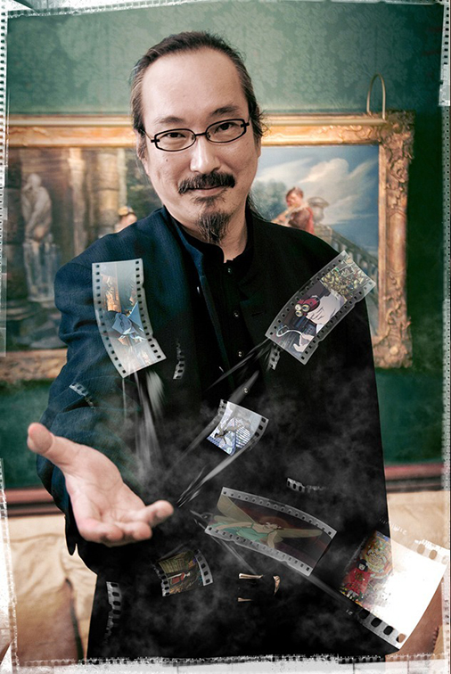

今 敏
动画界的造梦大师

“我的造梦之路”
1963年10月12日，在札幌出生。 因为父亲的工作调动，4岁到小学4年级在钏路度过，小学4年级到初中2年级在札幌度过，初中3年级到高中3年级在钏路度过。 漫画家泷泽圣峰是在札幌的同班同学，是私交甚笃的好友。 喜欢『宇宙战舰大和号』(1974年)，『阿尔卑斯山的少女』(1974年)，『未来少年柯南』(1978年)，『机动战士高达』(1979年)等作品。 另外很喜欢漫画作品有大友克洋的『童梦』等，还受到筒井康隆的短篇影响画过漫画。
1982年北海道钏路湖陵高级中学毕业后，进入武藏野美术大学。 那时，看了许多外国电影，同时热衷于筒井康隆的作品。
1984年，大学期间向讲谈社的知名漫画杂志“周刊Young Magazine”投稿个人漫画作品『虏 -とりこ』荣获该杂志新人赏“ちばてつや赏”第10回优秀新人赏。 以此为契机，他在隔年（1985年）正式出道成为职业漫画家。 此后，成为大友克洋的助手。
1987年大学毕业之后，推出漫画单行本『海归线』（1990年）、发表了『国际恐怖公寓』（大友克洋所拍摄的真人电影的漫画化）。 1991年，首次参与动画制作，担当『老人Z』的美术设定・Layout・原画，也参与了押井守的『机动警察2』等许多动画的制作。 此后，与押井守合作了漫画『Seraphim 2亿6661万3336只 天使之翼』，担当作画。 1995年，担当了大友克洋作为总导演监制的『回忆三部曲/她的回忆』的编剧·美术设定·Layout。 这部作品具有幻想和现实融合的浓重色彩，已经明确表现出了今敏此后作品的风格，幻想和现实相互融合的概念。
1993年，担当『JOJO奇妙冒险』的原画，编剧，构成，演出等。
1997年，初次担当竹内义和原作的『PERFECT BLUE』的导演。 这是一个围绕偶像进行描写的悬疑故事，是今敏与mad house公司的首次合作。 制作时，今敏不满足于原作的剧本，在原作者要求保留「偶像」·「恐怖」·「跟踪狂」3要素的基础上，对内容进行大量改编，与脚本家村井贞之的共同合作下将剧本完成。
『PERFECT BLUE』之后，今敏想将从前非常喜欢的筒井康隆的小说『パプリカ/红辣椒』（另有译名『梦侦探』）电影化，但『PERFECT BLUE』的配给公司（レックスエンタテイメント）破产，使这个想法停顿了下来。 与此同时，今敏开始着手制作以幻想和现实为主题的新作品，Trompe l'oeil（错视画法）和时间感的丧失等概念被加入其中，即2002年公映的『千年女优』，关于一位在事业巅峰时期选择隐退，具有传奇色彩女演员的故事。 与『PERFECT BLUE』同样的低成本制作（大概一亿两千万日元），但比前作取得了更大的成功、囊括了各种大奖。 剧本则是与脚本家村井贞之共同创作的，音乐人平泽进首次与今敏合作，之后成为今敏的固定音乐搭档。
2003年，第三部作品『东京教父』发表，讲述3个无家可归的流浪汉在圣诞节前夜的东京街头捡到一个弃婴，三人为弃婴寻找亲生父母的故事。 和之前的作品相比，制作费用增多（大约三亿日元），与信本敬子共同创作了剧本，是以流浪汉与弃婴这样的社会题材作为主题描写的喜剧。
2004年，制作了第一部TV动画『妄想代理人』（全13话）。 这个作品再次表现幻想和现实融合的主题，其中加入了许多社会性的题材。 本片中出现了一些今敏平时就在酝酿，但电影中没有表现出来的想法。
2006年，『红辣椒』发表，实现了今敏数年以来的构想。 这是关于使用仪器解析患者梦境来治疗精神隐疾所引发的故事。 这部电影同样非常成功，在各大电影节上揽获大奖。在这部作品中幻想与现实相融合的表现达到极致。
『红辣椒』之后，与押井守等多位日本知名动画导演一起参与了2007年播放的nhk制作「15位动画人 anikuri15」，发表了1分钟短篇作品『早上好』。 同年，日本アニメーター・演出协会（JAniCA）成立，今敏加入其中。
『早上好』发表后，今敏开始着手制作『造梦机器』。 2010年身体逐渐感到不适，同年5月被诊断出胰腺癌晚期。
2010年8月24日6时20分（东京时间）逝世。享年46岁。 第二天博客上发表了一篇给影迷们的名为「再见」的遗书。
另外，今敏未完成的『造梦机器』，在其逝世的同年11月，曾多次在其监督作品中担任角色设计和作画监督的板津匤览成为代理监督，继续作品的制作（上映时期不明）。
代表作
未麻的部屋(1997)
千年女优(2002)
东京教父(2003)
红辣椒(2006)
今敏：「我要怀着对世上所有美好事物的谢意，放下我的笔了。那么，我就先走一步了。」
More Information About Satoshi Kon